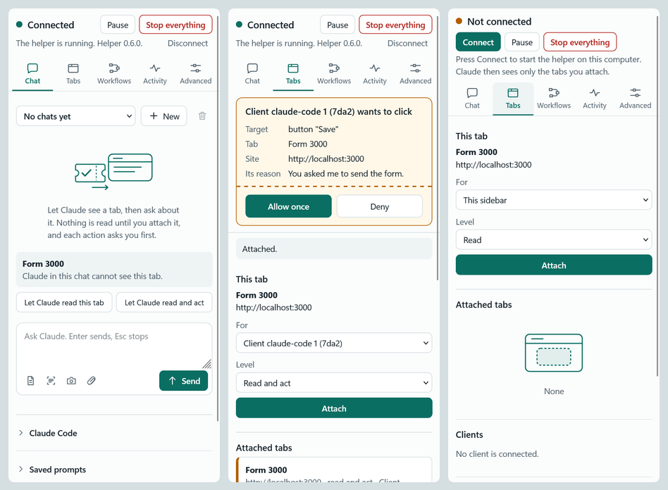

Claude works in the tabs you choose, and asks before it changes anything.
Kitewarden is a Firefox add-on for Windows. You attach a tab in the sidebar, Claude reads it or acts in it, and every action that changes something waits for your Allow.

What it does
- Only the tabs you attachClaude sees a tab only after you attach it, at the level you pick: read, or read and act. Other tabs stay out of reach.
- You approve each changeReading a tab you attached needs no click, unless a site rule says to ask. Anything that changes a page shows a card first.
- Sites can stay off-limitsSite rules keep chosen sites away from Claude in every tool. Pause and Stop everything end all work at once.
- Your own ClaudeIt works with Claude Code or Claude Desktop on your computer, signed in with your account. Kitewarden holds no account or key and runs no server.
Not released yet. Version 1.0.0 is being prepared. Until Mozilla signs it, Firefox keeps it only until a restart.
To try it now, build it from the source on GitHub and follow the setup guide.
Needs
Windows 11, Firefox 160 or later, and Claude Code or Claude Desktop.